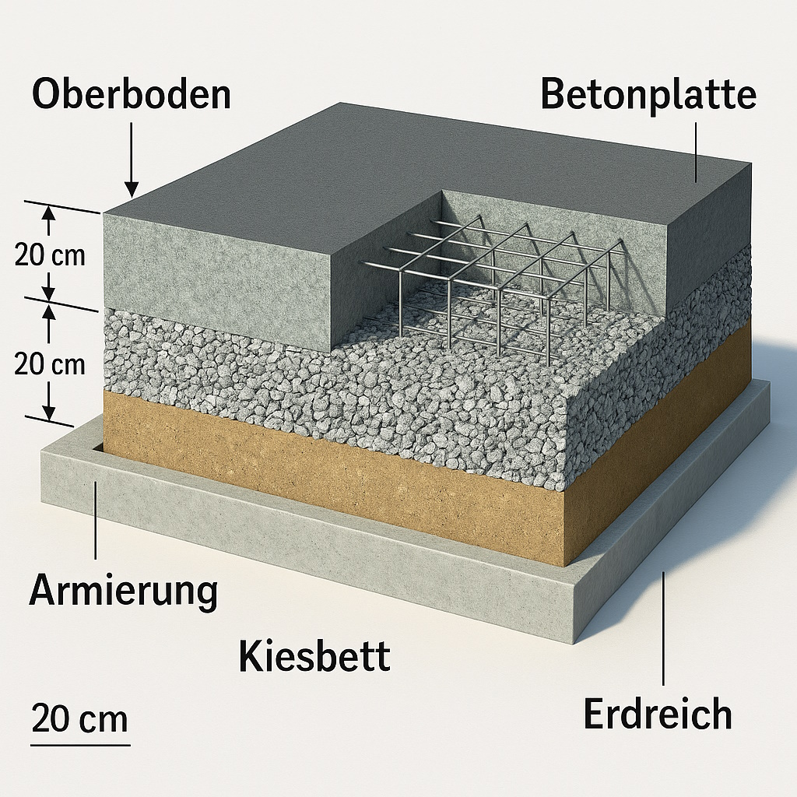

Betonfläche im Hof richtig aufbauen: So hält der Boden lange
Eine betonierte Hofeinfahrt oder Parkplatzfläche ist robust, pflegeleicht und viele Jahre nutzbar – vorausgesetzt, der Aufbau stimmt. In diesem Beitrag fassen wir zusammen, wie eine haltbare Betonfläche entsteht: von der Planung über den Aufbau der Tragschicht bis zu Dehnfugen und Nachbehandlung.

1. Warum eine Betonfläche im Hof sinnvoll ist
Im Vergleich zu Schotter oder reiner Erde bringt eine Betonfläche im Hof einige Vorteile:
- tragfähig genug für Fahrzeuge, Anhänger oder Lieferwagen
- kein Matsch, keine tiefen Spurrillen nach Regen
- Oberfläche lässt sich leicht reinigen und im Winter gut räumen
- kann später als Basis für Platten, Pflaster oder Carport dienen
Der Preis pro Quadratmeter liegt meist unter hochwertiger Pflästerung, bei gleichzeitig deutlich höherer Stabilität als bei reiner Schotterfläche.
2. Planung: Nutzung, Gefälle und Schichtaufbau
Bevor der Bagger kommt, sollten ein paar Fragen geklärt sein:
- Wird die Fläche nur begangen oder auch mit Fahrzeugen befahren?
- Wie läuft Wasser ab? Wohin soll Regenwasser fliessen?
- Welche Dicke für Tragschicht und Beton ist sinnvoll?
Für eine befahrbare Fläche im Hof wird in der Praxis oft folgender Aufbau gewählt (als grobe Orientierung):
- 15–25 cm Tragschicht aus Schotter oder Kies, verdichtet
- 10–15 cm Beton bei Pkw-Belastung
- Gefälle von ca. 1–2 % vom Gebäude weg
3. Aushub und Tragschicht
Zuerst werden Fläche und Höhe grob festgelegt (Schnur, Pflöcke, Farbe). Dann wird der Boden so tief ausgehoben, dass Tragschicht und Beton Platz haben. Wichtig ist, weiche, humose Schichten komplett zu entfernen.
Auf das Planum kommt eine Schicht aus Schotter oder Kies, die mit Rüttelplatte oder Walze sorgfältig verdichtet wird. Je besser diese Schicht hergestellt ist, desto ruhiger bleibt der Beton später.
Auf bindigen, tragfähigen Böden kann die Tragschicht etwas dünner ausfallen, auf weichen oder aufgefüllten Böden eher stärker – hier lohnt sich Erfahrung oder eine kurze Rücksprache mit einem Fachmann.
4. Schalung, Randabschluss und Folie
Die Schalung gibt der Betonplatte Form und Höhe. Meist werden Holzbohlen oder Schalungsbretter verwendet, die von aussen gut abgestützt werden. Gleichzeitig lohnt es sich, über den Randabschluss nachzudenken – zum Beispiel Randsteine oder Betonborde.
Damit das „Betonmilch“ nicht in die Tragschicht abfliesst, wird häufig eine Folie auf die verdichtete Schicht gelegt. Sie hilft, ein gleichmässiges Abbinden zu erreichen und reduziert spätere Risse.
5. Bewehrung und Fugenplanung
Je nach Belastung wird eine Bewehrung eingelegt – zum Beispiel Baustahlmatten. Wichtig ist, dass die Matten im Beton liegen und nicht direkt auf der Tragschicht aufliegen. Abstandshalter oder kleine Betonklötze helfen, die richtige Lage zu halten.
Gleichzeitig sollte man sich überlegen, wo Dehn- bzw. Scheinfugen entstehen sollen, damit der Beton bei Temperaturwechseln kontrolliert arbeiten kann. Diese Fugen können später eingeschnitten und mit geeignetem Material ausgefüllt werden.
6. Beton einbauen und abziehen
Je nach Fläche bietet sich Fertigbeton aus dem Fahrmischer oder selbst gemischter Beton an. Wichtig ist eine konstante Konsistenz, nicht zu viel Wasser im Mix und zügiges Arbeiten.
- Beton gleichmässig verteilen, nicht nur an einer Stelle abkippen
- bei Bedarf leicht verdichten (Stange, Rüttler) – ohne Bewehrung zu verschieben
- immer „gegen die Mauer“ oder gegen eine feste Kante arbeiten
Das Niveau wird mit Richtlatte und Wasserwaage kontrolliert. Hilfreich sind eingebaute „Mauerlehren“ oder Hilfsschienen, über die man den Beton abziehen kann. Hohe Stellen werden abgezogen, Vertiefungen sofort mit frischem Beton aufgefüllt.
7. Oberfläche und Nachbehandlung
Je nach Nutzung kann die Oberfläche nur grob abgezogen oder zusätzlich geglättet werden. Für Aussenflächen im Hof ist eine leicht raue Oberfläche meist sinnvoll – sie ist rutschhemmender als ein „Spiegel“.
In den ersten Tagen nach der Betonage ist die Nachbehandlung entscheidend:
- Beton vor Sonne, Wind und Zugluft schützen
- bei warmem Wetter leicht befeuchten oder abdecken, damit er nicht zu schnell austrocknet
- Fahrzeugbelastung erst zulassen, wenn der Beton ausreichend fest ist
8. Häufige Fehler, die wir immer wieder sehen
- zu wenig oder keine Verdichtung der Tragschicht – später sackt der Beton ab
- zu viel Wasser im Beton – die Oberfläche sieht schön aus, staubt aber schnell ab
- kein Gefälle oder Gefälle zum Haus hin
- fehlende Dehnfugen bei grossen Flächen
- zu frühe Belastung durch Fahrzeuge oder schwere Paletten
Wer diese Punkte im Blick behält, bekommt eine Betonfläche im Hof, die viele Jahre funktioniert – ohne Pfützen, Abplatzungen und wachsende Rissbilder.
Video: Beispiel einer Hof-Betonplatte
In einem Praxisvideo könnte man hier den kompletten Ablauf zeigen – vom Aushub über die Tragschicht bis zum Abziehen mit der Richtlatte. Später können Sie hier Ihr eigenes Video einbinden: